Explorez 5 milliards d'objets géospatiaux, analysez des images satellites et calculez des itinéraires — en langage naturel.
Une plateforme géo-IA complète, de la requête NL au rendu cartographique.
MapLibre GL 5 avec tuiles vectorielles, styles dynamiques, contrôle des couches par commande naturelle — sans aucune clé API.
Exposés directement dans Claude Desktop et Cursor via le Model Context Protocol.
Google Earth Engine intégré : NDVI, LST, NDWI, EVI, timelapse, détection de changement.
5 milliards d'objets Overture interrogés en SQL in-memory, sans serveur.
pgvector sélectionne automatiquement les meilleurs outils selon l'intention.
Mémoire → Routeur → RAG → Débat agents → Exécution MCP → Validation → Rendu.
GeoJSON · GeoPackage · CSV · Parquet · PDF cartographique. Import shapefile natif.
Chat IA en langage naturel ou modules directs — vectoriel, raster, import, services OGC. Tout en une interface.
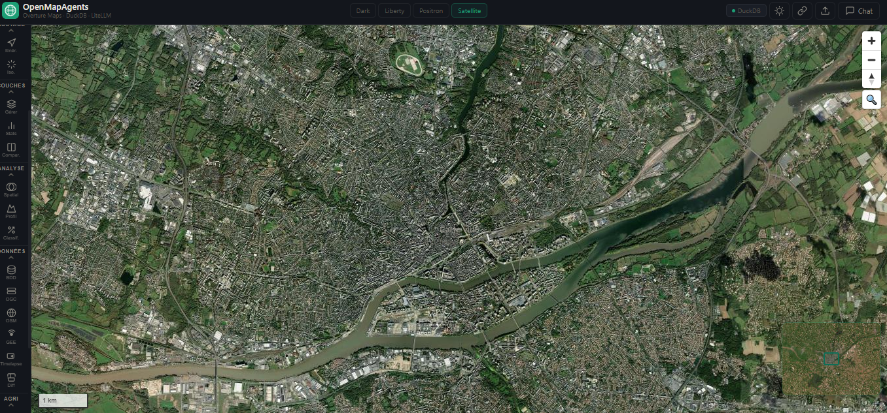
Via le chat IA en langage naturel, ou en appelant les 10 modules MCP directement depuis Claude Desktop, Cursor ou l'API — à vous de choisir.
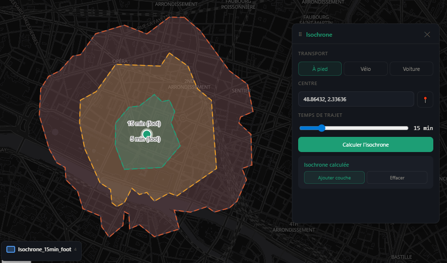
Calculez les zones accessibles en 5, 10, 15 ou 30 minutes à pied, à vélo ou en voiture. Rendu en dégradé polygonal par palier de temps.
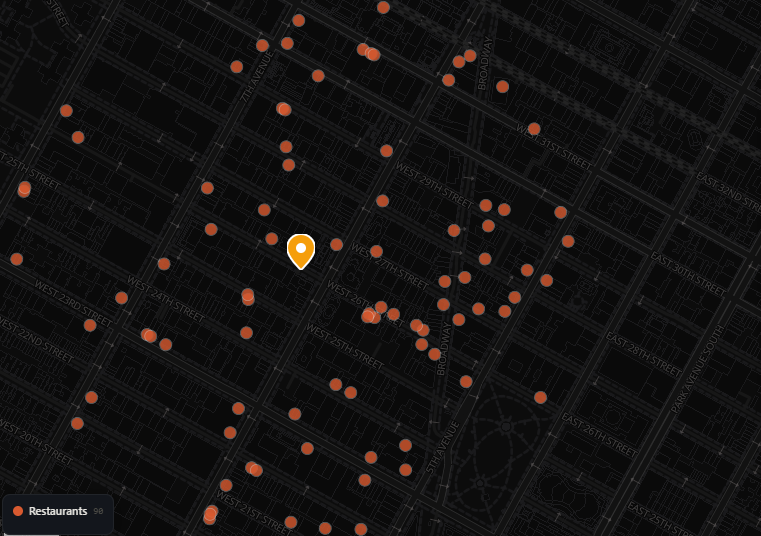
Interrogez les 5 milliards d'objets Overture Maps via DuckDB S3. Filtres par type, catégorie et distance avec statistiques H3.
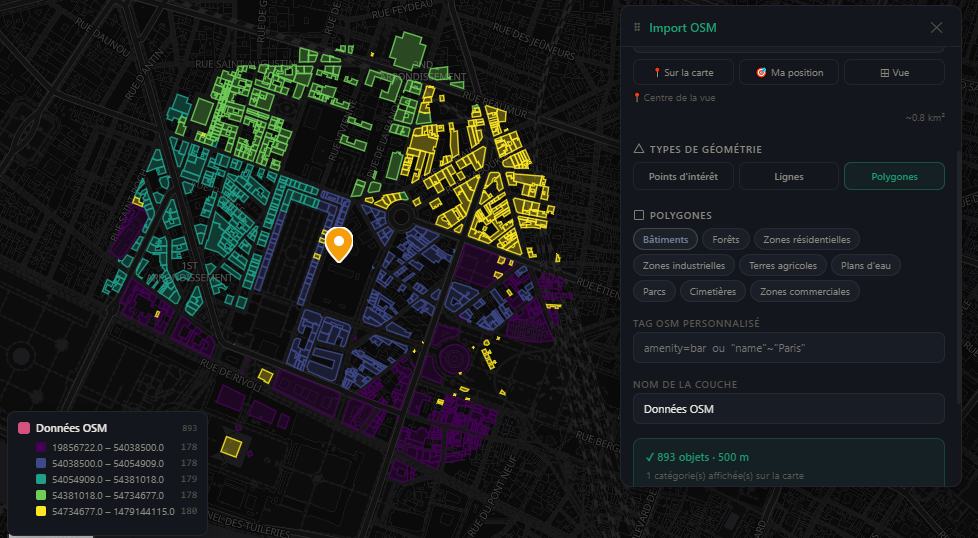
Toute la richesse OSM en temps réel via Overpass API — amenities, voiries, parcs, cours d'eau. Géocodage Nominatim intégré.
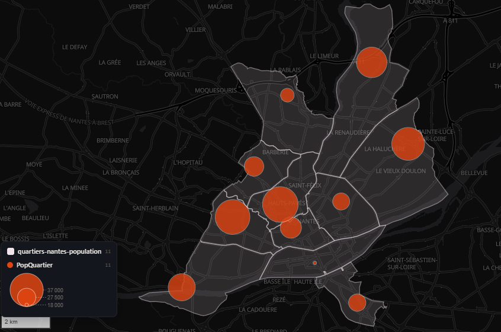
Connectez PostgreSQL/PostGIS, MySQL ou SQLite. Jointures spatiales, buffers, découpes et requêtes en langage naturel, converties en GeoJSON.
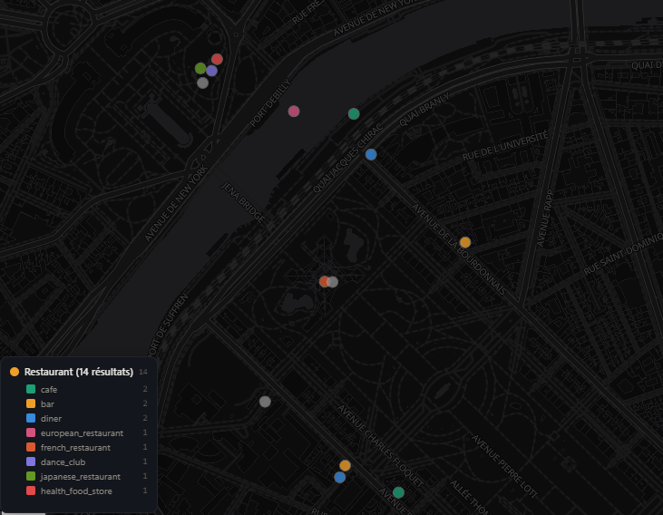
Importez GeoJSON, Shapefile (.zip), CSV géoréférencé, GPX ou KML. Conversion automatique et rendu immédiat sur la carte.
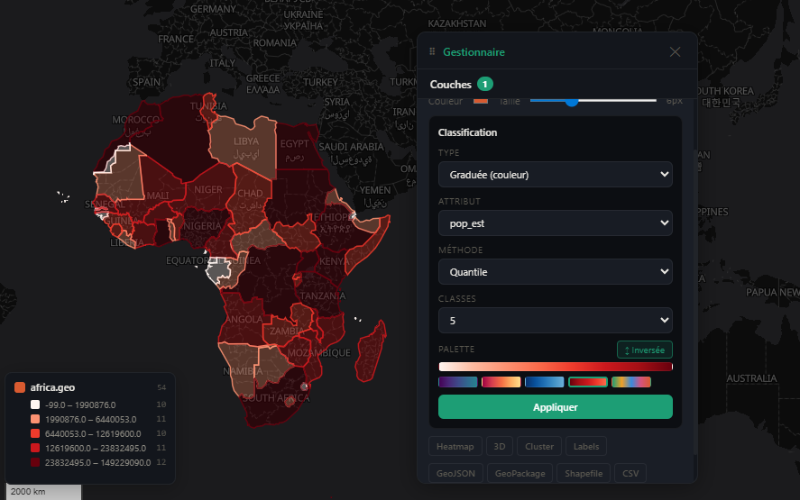
1 000+ indicateurs Banque Mondiale (PIB, population, santé…) visualisés en choroplèthe sur les divisions administratives Overture.
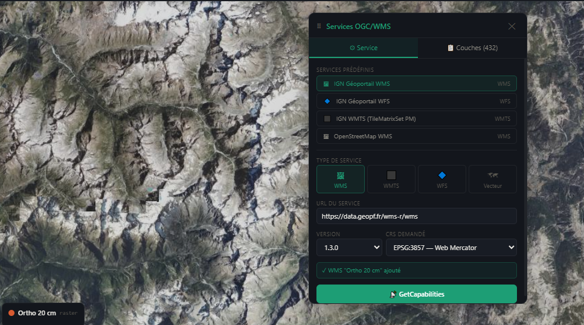
Connectez n'importe quel géoserveur OGC — IGN, Copernicus, GeoServer privé. Tuiles et données vectorielles superposées instantanément.
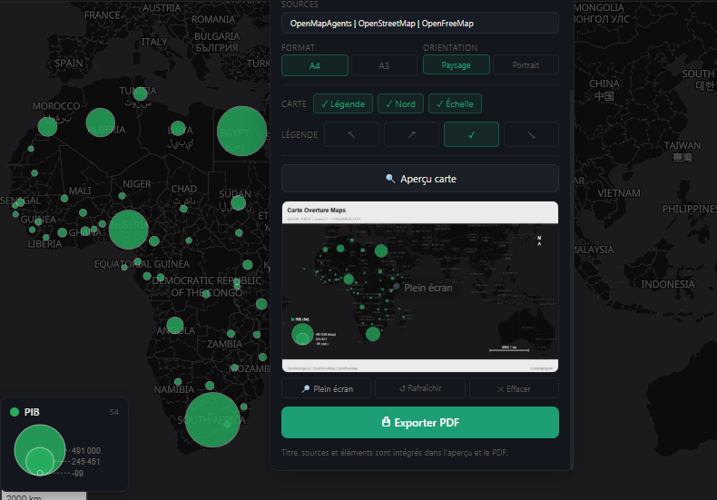
Personnalisez symboles, couleurs et légende. Comparez plusieurs cartes côte à côte. Exportez en PDF haute résolution ou PNG.
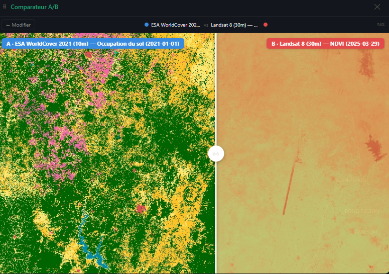
Affichez plusieurs cartes côte à côte pour comparer différentes dates, couches ou indicateurs. Synchronisation automatique du zoom et du centre.
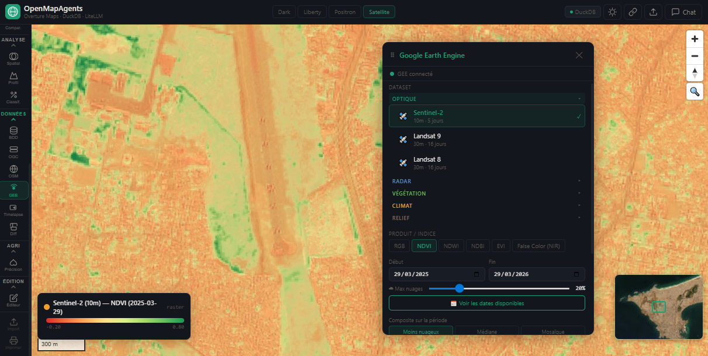
Indices NDVI, EVI et NDWI sur vos parcelles agricoles. Détectez le stress hydrique, la vigueur de la végétation et les zones à irriguer.
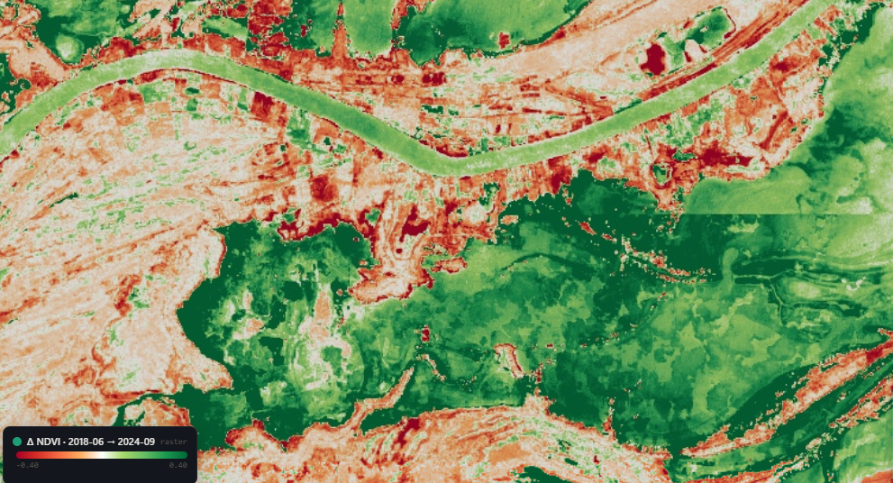
Comparez automatiquement deux dates et visualisez les zones déboisées, urbanisées ou brûlées. Statistiques de superficie calculées.
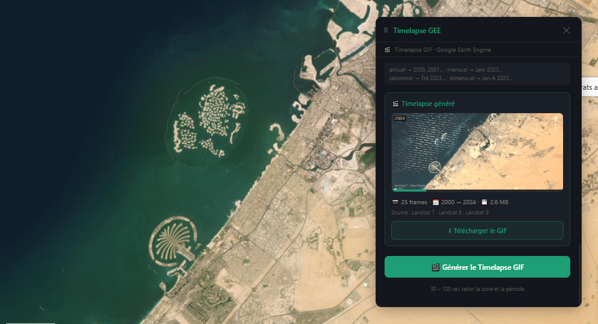
Animation satellite sur 25 ans sur n'importe quelle zone. Observez l'évolution des villes, des glaciers, du trait de côte ou des zones agricoles.
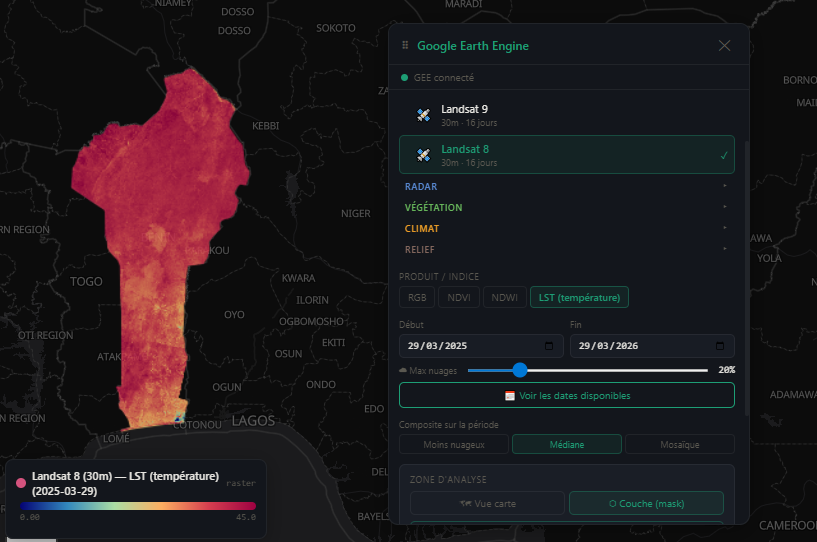
Cartographiez les températures de surface avec MODIS/Landsat. Identifiez les îlots de chaleur pour les politiques d'adaptation climatique.
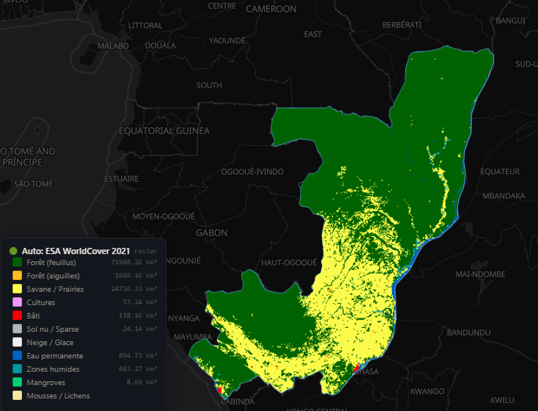
Entraînez un classifieur Random Forest ou k-means en quelques mots. Classification Google WorldCover 10 m incluse pour référence.
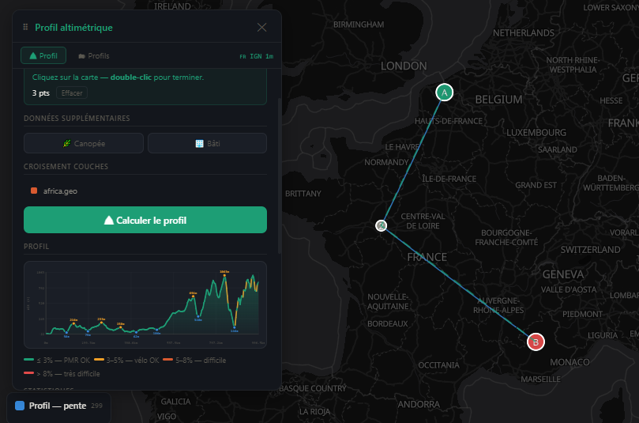
DEM haute résolution via MapTiler. Profil interactif, pentes en degrés ou %, exposition des versants et dénivelé cumulé sur votre parcours.
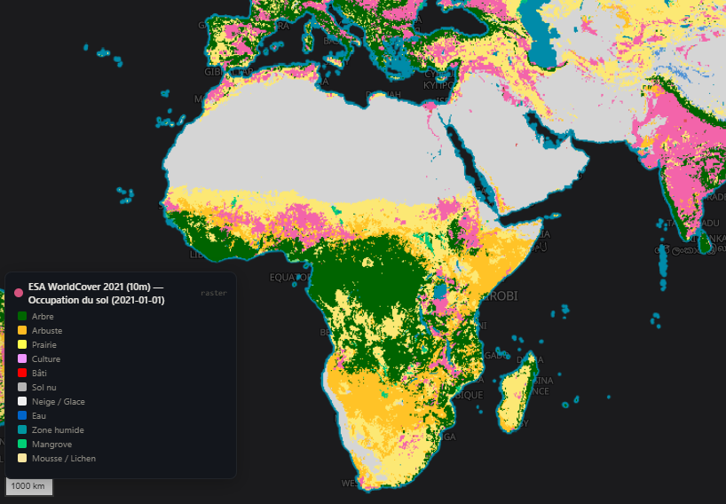
Classification ESA WorldCover à 10 m de résolution — forêt, eau, cultures, zones bâties, zones humides. Couverture mondiale complète.
Surveiller l'évolution de vos parcelles agricoles.
Du prompt naturel à la carte en <3s — RAG pgvector, débat agents, validation Pydantic.
Chargement du contexte utilisateur et historique via pgvector. Les embeddings des échanges passés garantissent la continuité conversationnelle.
Basculez de provider sans changer une ligne de code grâce à LiteLLM.
Docker, Linux ou Windows — au choix.
# Clonez le dépôt git clone https://github.com/diouck/openmapagents.git cd OpenMapAgents # Configurez les variables d'environnement cp .env.example .env # Démarrez tous les services docker compose up -d # → Application disponible sur http://localhost:5173
git clone https://github.com/diouck/openmapagents.git cd OpenMapAgents chmod +x install.sh && ./install.sh ./start.sh
git clone https://github.com/diouck/openmapagents.git cd OpenMapAgents .\setup.ps1 python -m uvicorn backend.agent:app --reload
// ~/.config/claude/claude_desktop_config.json { "mcpServers": { "overture": { "command": "python", "args": ["/path/to/mcp_servers/mcp_overture.py"] }, "gee": { "command": "python", "args": ["/path/to/mcp_servers/mcp_gee.py"] } } }
OpenMapAgents est en développement actif. Toutes les contributions sont bienvenues.